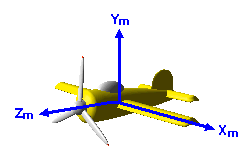

The model coordinate system is the base system used when creating model data for a specific design of an object as shown here:

Generally, when modeling several objects, you define the coordinate origin, axes, scale, and so on individually so that it is easy to model each object. For example, when modeling a robot's arm consisting of a forearm and an upper arm, you use an individual coordinate system for each of them. Depending on the modeler, the range used as a model coordinate, may be normalized to -1.0 <= x < 1.0, -1.0 <= y < 1.0, and -1.0 <= z < 1.0. In this case, you have to create the model data within this limitation.
You can use the model coordinate system to define each modeling object independently. For example, when you model an airplane like the one shown above, you might define a length of 1 meter as 0.1 and do modeling in a space where one edge is 20 meters (because the range of each axis is from -1.0 to 1.0). When you model a human head, you could define 1 centimeter as 0.05, and then do the modeling in a space where one edge is 40 centimeters.
The coordinates defined in the model coordinate system are expressed as (xm...,ym...,zm...,).
Note that there is no uniform model coordinate system that all 3D modelers of each company use. Each 3D modeler is free to set up their own model coordinate system.
Nintendo® Confidential
Copyright © 1999
Nintendo of America Inc. All Rights Reserved
Nintendo and N64 are registered trademarks of Nintendo
Last Updated March, 1999